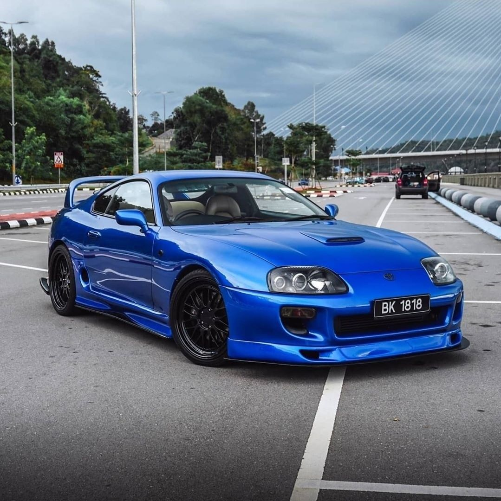

Descripció del Cotxe
Marca: Toyota
Model: Supra A80 / MK4
Any: 1993
Color: Blau
Motor: 2JZ-GTE 6 cilindres en línea 3.0L biturbo
Transmissió: Manual
Preu: 60.000€
TOYOTA SUPRA A80
Disposa del motor RZ biturbo 2JZ-GTE de 280 CV (276 HP; 206 kW) a les 5800 rpm i un parell màxim de 46 kg·m (451 N·m; 333 lb·peu) a les 3600 rpm.